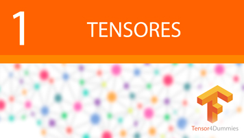
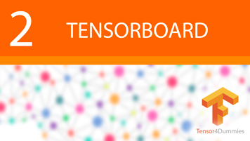
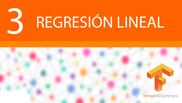

Tensor4Dummies | tensores
Aprendizaje de Tensorflow para programadores. Todo lo que necesitas saber sobre tensores en español.

Parte 1: Tensores
El primer contacto con Tensorflow mediante su unidad fundamental: "tensor". Todas sus características y tipos.

Parte 2: Tensorboard
Aprende a usar la herramienta Tensorboard para visualizar los grafos, gráficas y demás de tus programas.

Parte 3: Regresión lineal
Cálculo de la ecuación de la recta que se ajuste lo máximo posible dados unos puntos en coordenadas X y Y.
Parte 4: Clustering
Agrupación de datos con k-means mediante la actualización de los centroides.

Parte 5: Imágenes
Funcionamiento y explicación básica de cómo funciona el procesamiento de imágenes y MNIST en TensorFlow.